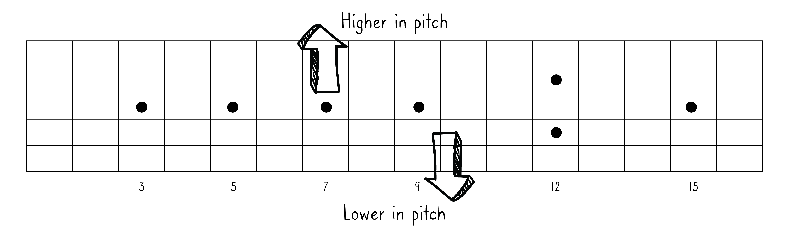
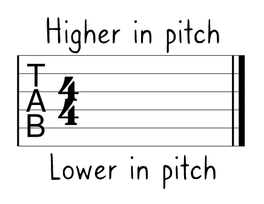
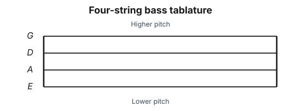
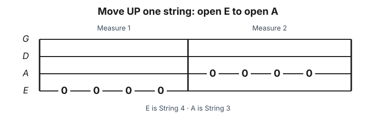
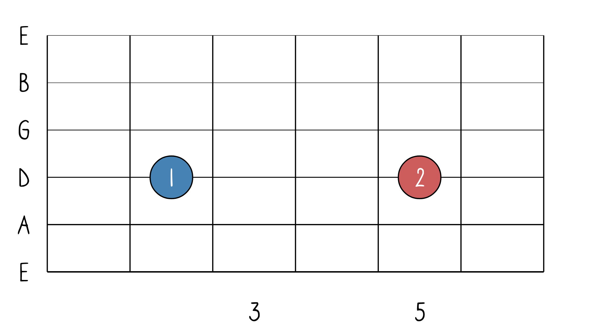
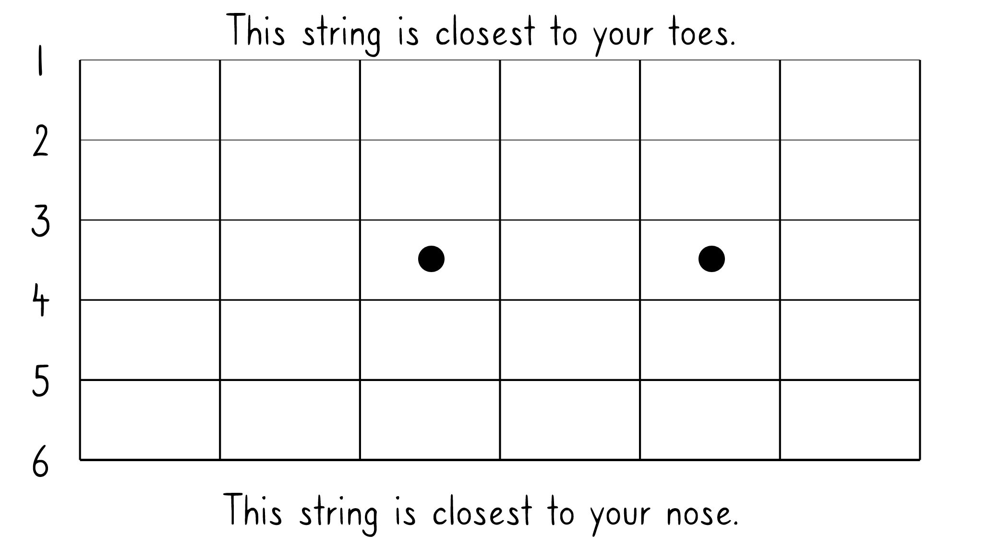
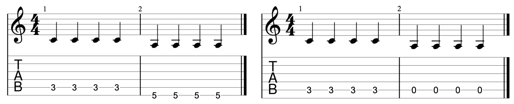

Chapter 2
The Fretboard: Going Up and Down The Fretboard
On a single string, when you play lower-numbered frets, they are lower in pitch than when you play the higher-numbered frets. For example, when you play the 3rd fret (of any string), it is lower in pitch than the 5th fret (of the same string). The lowest pitch on any string is the open string itself. You can think of it as “fret 0,” the floor that “going up” starts from.

When people say “go UP the fretboard” or “move UP the fretboard”, they mean that you should go UP in pitch and therefore move toward the body of the instrument. Going “down the fretboard” means you play pitches that move toward the headstock.
What about going from string to string?
When going or moving from strings that are closer to your nose towards strings closer to your toes, you are also moving higher in pitch.

Generally, when people say “move to the next string UP” they are referring to pitch and therefore you need to move to the next string down physically on the fretboard. This is also consistent with how tablature works. In tablature, lower-pitched strings are at the bottom and the higher-pitched strings are at the top.
Guitar example

In this simple example below, you play the open 6th string 4 times (in measure 1) then you play the open 5th string 4 times (in measure 2). You, therefore, move UP a string from measure 1 to measure 2.
This example is in tablature. |
In Standard Notation, sometimes the string number is in a circle to explicitly tell you to go from one string (6th string, low E) to another string (5th string, A).
 |
Bass example
Bass tablature normally has four lines. The low E string is the bottom line, and the higher-pitched strings appear above it.

Play the open E string—the 4th string—four times in measure 1. Then play the open A string—the 3rd string—four times in measure 2. You have moved up one string.

Some teachers use “up” and “down” to describe the physical direction their hand moves rather than the change in pitch. That reverses the convention used in tablature. In this book, moving from a lower-pitched string to a higher-pitched string means moving up a string; moving toward a lower-pitched string means moving down.
Music Theory and The Fretboard Student assignment—Pitch
Guitar assignment
- Use the online tool at https://academo.org/demos/wave-interference-beat-frequency to display 100Hz and 200Hz. Draw 1 cycle of each below.
- Which is higher in pitch? Circle one: “1” or “2”

- Which open string is lower in pitch? Circle one: String #3 or String #5

- Which piece of notation/tab represents going UP a string from measure 1 to measure 2?

- Which piece of notation/tab represents going DOWN a string from measure 1 to measure 2?

Bass assignment
- Use the online tool at https://academo.org/demos/wave-interference-beat-frequency to display 100 Hz and 200 Hz. Draw one cycle of each. Which frequency is higher in pitch?
- On the D string, which is higher in pitch: fret 3 or fret 5?
- Which open bass string is lower in pitch: String 2 (D) or String 4 (E)?
- Measure 1 uses the open E string and measure 2 uses the open A string. Did you move up or down a string?
- Measure 1 uses the open A string and measure 2 uses the open E string. Did you move up or down a string?